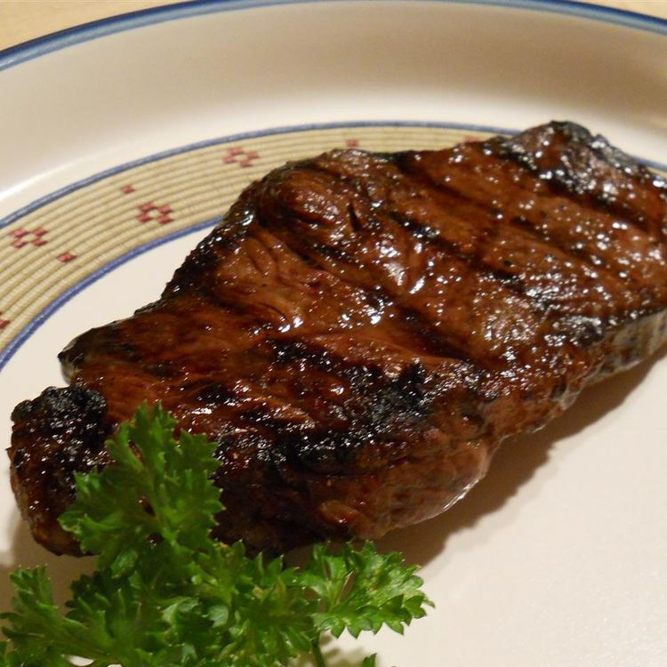

Steak Marinade

I have no idea why people like eating steaks. They are literally just giant blocks of meat with some
cheap sauce on top. Maybe some peper as well if you are lucky. Like, if you want to eat meat, at least
have the audacity to eat properly cooked meat, intead of insulting mankind's greatest invention of
fire by eating raw meat and using knifes and forks to pretend like you're not a savage babarian.
Ingradients
- 1/4 cup olive oil
- 1/4 cup balsamic vinegar
- 1/4 cup Worcestershire sauce
- 1/4 cup soy sauce
- 2 teaspoons Dion mustard
- 2 teaspoons minced garlic
- 1 pinch salt and pepper to taste
Steps
- Mix olive oil, balsamic vinegar, Worchestershire sauce, soy sauce, Dijon mustard, and garlic in a
small bowl. Season with salt and peper.
- Put it on the steak or something, I donno. It's just a steak, figure it out.